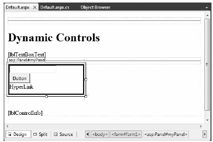
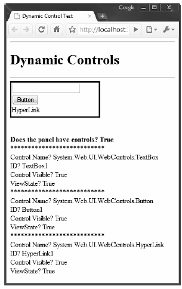

The System.Web.UI.Control base class defines various properties, methods, and events that allow the ability to interact with core (typically non-GUI) aspects of a web control. Table 33-1 documents some, but not all, members of interest.
Table 33-1. Select Members of System.Web.UI.Control
| Member | Meaning in Life |
|---|---|
| Controls | This property gets a ControlCollection object that represents the child controls within the current control. |
| DataBind() | This method binds a data source to the invoked server control and all its child controls. |
| EnableTheming | This property establishes whether the control supports theme functionality (the default is true). |
| HasControls() | This method determines whether the server control contains any child controls. |
| ID | This property gets or sets the programmatic identifier assigned to the server control. |
| Page | This property gets a reference to the Page instance that contains the server control. |
| Parent | This property gets a reference to the server control’s parent control in the page control hierarchy. |
| SkinID | This property gets or sets the skin to apply to the control, which allows you to set the look and feel using server side resources. |
| Visible | This property gets or sets a value that indicates whether a server control is rendered as a UI element on the page. |
The first aspect of System.Web.UI.Control we will examine is the fact that all web controls (including Page itself) inherit a custom controls collection (accessed via the Controls property). Much like in a Windows Forms application, the Controls property provides access to a strongly typed collection of WebControl derived types. Like any .NET collection, you have the ability to add, insert, and remove items dynamically at runtime.
While it is technically possible to add web controls directly to a Page-derived type, it is easier (and more robust) to make use of a Panel control. The Panel class represents a container of widgets that may or may not be visible to the end user (based on the value of its Visible and BorderStyle properties).
To illustrate, create a new Empty Web Site named DynamicCtrls and add a new web page to your project. Using the Visual Studio 2010 page designer, add a Panel control (named myPanel) that contains a TextBox, Button, and HyperLink widget named whatever you choose (be aware that the designer requires that you drag internal items within the UI of the Panel type). Next, place a Label widget outside the scope of the Panel (named lblControlInfo) to hold the rendered output. Here is one possible HTML description:
<html xmlns="http://www.w3.org/1999/xhtml"> <head runat="server"> <title>Dynamic Control Test</title> </head> <body> <form id="form1" runat="server"> <div> <hr /> <h1>Dynamic Controls</h1> <asp:Label ID="lblTextBoxText" runat="server"></asp:Label> <hr /> </div> <!-- The Panel has three contained controls --> <asp:Panel ID="myPanel" runat="server" Width="200px" BorderColor="Black" BorderStyle="Solid" > <asp:TextBox ID="TextBox1" runat="server"></asp:TextBox><br/> <asp:Button ID="Button1" runat="server" Text="Button"/><br/> <asp:HyperLink ID="HyperLink1" runat="server">HyperLink </asp:HyperLink> </asp:Panel> <br /> <br /> <asp:Label ID="lblControlInfo" runat="server"></asp:Label> </form> </body> </html>
With this markup, your page designer will look something like that of Figure 33-1.
Figure 33-1 The UI of the Dynamic Controls web page
Assume in the Page_Load() event you wish to obtain details regarding the controls contained within the Panel and assign this information to the Label control (named lblControlInfo). Consider the following C# code:
public partial class _Default : System.Web.UI.Page { private void ListControlsInPanel() { string theInfo = ""; theInfo = string.Format("<b>Does the panel have controls? {0} </b><br/>", myPanel.HasControls()); // Get all controls in the panel. foreach (Control c in myPanel.Controls) { if (!object.ReferenceEquals(c.GetType(), typeof(System.Web.UI.LiteralControl))) { theInfo += "***************************<br/>"; theInfo += string.Format("Control Name? {0} <br/>", c.ToString()); theInfo += string.Format("ID? {0} <br>", c.ID); theInfo += string.Format("Control Visible? {0} <br/>", c.Visible); theInfo += string.Format("ViewState? {0} <br/>", c.EnableViewState); } } lblControlInfo.Text = theInfo; } protected void Page_Load(object sender, System.EventArgs e) { ListControlsInPanel(); } }
Here, you iterate over each WebControl maintained on the Panel and perform a check to see whether the current type is of type System.Web.UI.LiteralControl, and if so, we skip over it. This class is used to represent literal HTML tags and content (such as <br>, text literals, etc.). If you do not do this sanity check, you might be surprised to find many more controls in the scope of the Panel (given the *.aspx declaration seen previously). Assuming the control is not literal HTML content, you then print out some various statistics about the widget. Figure 33-2 shows the output.
Figure 33-2 Enumerating controls at runtime
Now, what if you wish to modify the contents of a Panel at runtime? Let’s update the current page to support an additional Button (named btnAddWidgets) that dynamically adds three new TextBox controls to the Panel and another Button (named btnClearPanel) that clears the Panel widget of all controls. The Click event handlers for each are shown here:
protected void btnClearPanel_Click(object sender, System.EventArgs e) { // Clear all content from the panel, then re-list items. myPanel.Controls.Clear(); ListControlsInPanel(); } protected void btnAddWidgets_Click(object sender, System.EventArgs e) { for (int i = 0; i < 3; i++) { // Assign an ID so we can get // the text value out later // using the incoming form data. TextBox t = new TextBox(); t.ID = string.Format("newTextBox{0}", i); myPanel.Controls.Add(t); ListControlsInPanel(); } }
Notice that you assign a unique ID to each TextBox (e.g., newTextBox0, newTextBox1, and so on). If you run your page, you should be able to add new items to the Panel control and clear the Panel of all content.
Now, if you want to obtain the values within these dynamically generated TextBoxes, you can do so in a variety of ways. First, update your UI with one additional Button (named btnGetTextData), a final Label control named lblTextBoxData, and handle the Click event for the Button.
To get access to the data within the dynamically created text boxes, you have a few options. One approach is to loop over each item contained within the incoming HTML form data (accessed via HttpRequest.Form) and concatenate the textual information to a locally scoped System.String. Once you have exhausted the collection, assign this string to the Text property of the new Label control:
protected void btnGetTextData_Click(object sender, System.EventArgs e) { string textBoxValues = ""; for (int i = 0; i < Request.Form.Count; i++) { textBoxValues += string.Format("<li>{0}</li><br/>", Request.Form[i]); } lblTextBoxData.Text = textBoxValues; }
When you run the application, you will find that you are able to view the content of each text box, including some rather long (unreadable) string data. This string contains the view state for each control on the page. You’ll learn about the role of view state in Chapter 35.
To clean up the output, you could instead pluck out the textual data for your uniquely named items (newTextBox0, newTextBox1 and newTextBox2). Consider the following update:
protected void btnGetTextData_Click(object sender, System.EventArgs e) { // Get teach text box by name. string lableData = string.Format("<li>{0}</li><br/>", Request.Form.Get("newTextBox0")); lableData += string.Format("<li>{0}</li><br/>", Request.Form.Get("newTextBox1")); lableData += string.Format("<li>{0}</li><br/>", Request.Form.Get("newTextBox2")); lblTextBoxData.Text = lableData; }
Using either approach, you will notice that once the request has been processed, the text boxes disappear. Again, the reason has to do with the stateless nature of HTTP. If you wish to maintain these dynamically created TextBoxes between postbacks, you need to persist these objects using ASP.NET state programming techniques (again, see Chapter 35).
Source Code The DynamicCtrls website is included under the Chapter 33 subdirectory.
As you can tell, the Control type provides a number of non–GUI-related behaviors (the controls collection, autopostback support, etc.). On the other hand, the WebControl base class provides a graphical polymorphic interface to all web widgets, as suggested in Table 33-2.
Table 33-2. Select Properties of the WebControl Base Class
| Property | Meaning in Life |
|---|---|
| BackColor | Gets or sets the background color of the web control. |
| BorderColor | Gets or sets the border color of the web control. |
| BorderStyle | Gets or sets the border style of the web control. |
| BorderWidth | Gets or sets the border width of the web control. |
| Enabled | Gets or sets a value indicating whether the web control is enabled. |
| CssClass | Allows you to assign a class defined within a Cascading Style Sheet to a web widget. |
| Font | Gets font information for the web control. |
| ForeColor | Gets or sets the foreground color (typically the color of the text) of the web control. |
| Height, Width | Get or set the height and width of the web control. |
| TabIndex | Gets or sets the tab index of the web control. |
| ToolTip | Gets or sets the tool tip for the web control to be displayed when the cursor is over the control. |
Almost all of these properties are self-explanatory, so rather than drill through the use of them one by one, let’s instead check out a number of ASP.NET Web Form controls in action.